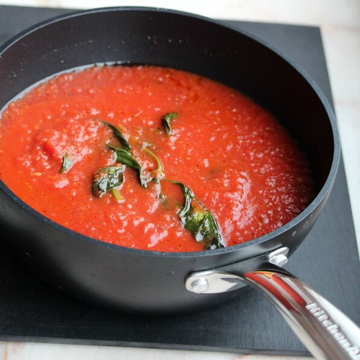

Sugo di Pomodoro

Description
This is a basic recipe for authentic Italian tomato sauce flavored with extra-virgin olive oil, garlic and basil
Toss with your favorite pasta or use for pizza, gnocchi and more.
Ingredients
- 2 tablespoons extra-virgin olive oil
- 1 onion, chopped
- 4 cloves garlic, halved
- 2 (14 ounce) cans passata (crushed tomatoes)
- 1/4 cup fresh basil, torn in half
- salt to taste
Steps
- Heat oil in a saucepan over low heat. Add onion and garlic.
- Cook and stir until soft and translucent, about 5 minutes. Add passata, basil, and salt.
- Cover and simmer over medium heat, stirring occasionally, until tomato sauce has thickened, about 20 minutes.
- Remove garlic halves before serving.